因巴岳前面的一段路封閉, 掉頭返回 GEO Trail 出口, 重新計劃了往涉地可支的步行路線後, 便沿馬路朝西面走, 很快便來到吾照里 (오조리)的入口。按地圖所示, 沿小路穿過吾照里, 再往前走便可抵達涉地可支。看看手錶, 已經是早上十時十五分。早上九時十分從酒店出發, 花了足足一小時才來到這裡!
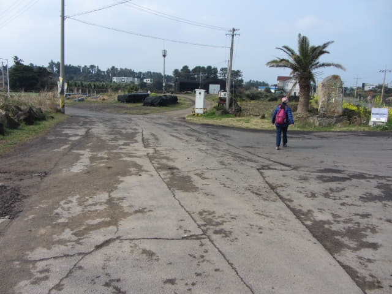
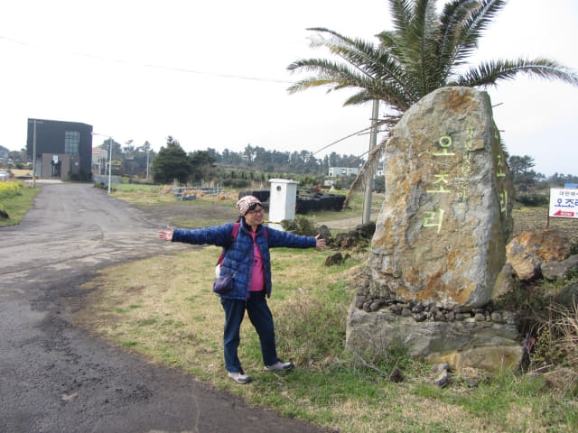
接著轉左進入吾照里, 沿城山浦旁的小路走。按地圖所示, 一直走便是, 路線十分簡單。
城山浦上有一道拱形的木橋, 如果不是封路, 我們應該在那裡進入吾照里的!
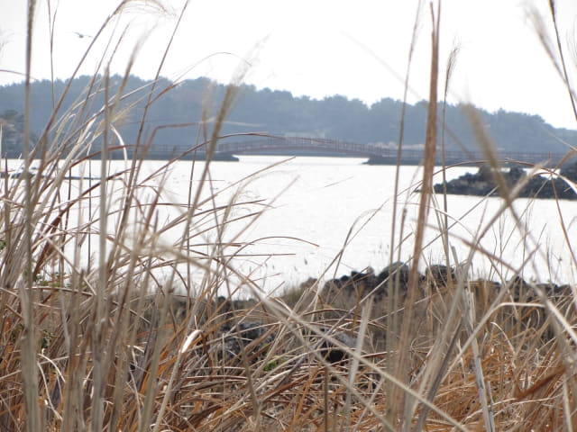
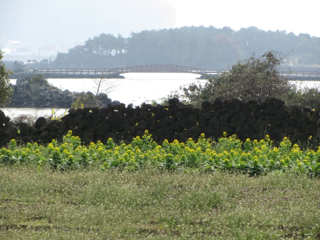
經過一間城山浦畔的幽雅酒店 – 歐杰拉克莊園酒店 (메종드오조락)。所有房間都可眺望城山浦和城山日出峰, 環境相當優美和清靜。
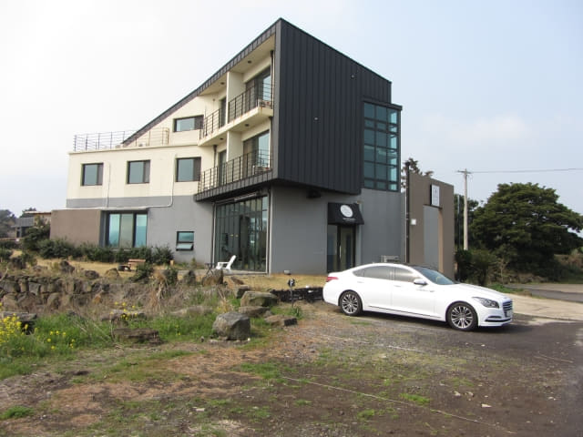
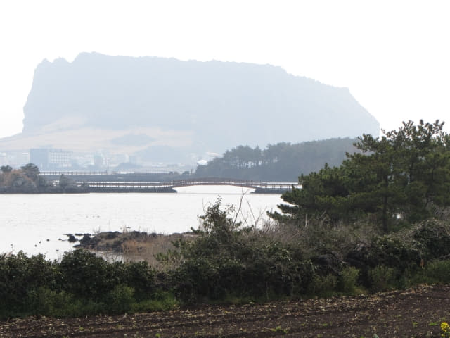
又經過另一間環境優美的酒店 – 빈필드하우스, 也有包早餐的, 但價錢比我們下榻的美麗度假村貴很多。有興趣的朋友, 可透過 Airbnb.com 預定房間。
https://www.airbnb.com/rooms/5222501
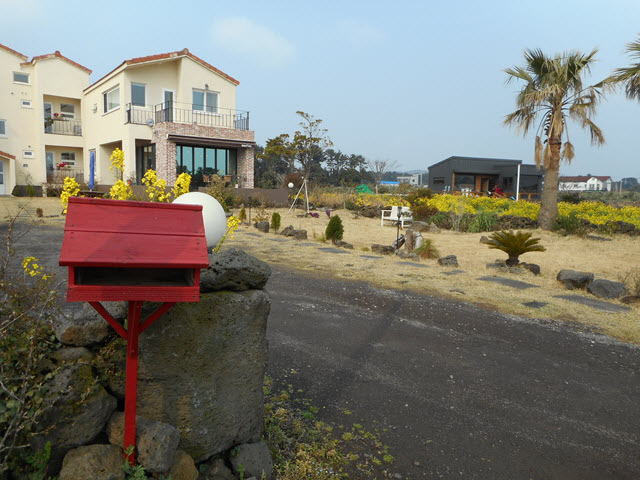
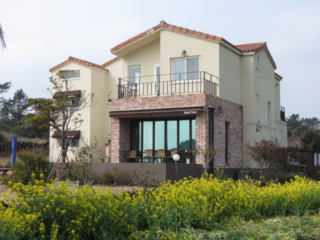
沿村莊中的小路繼續向前走, 十分寧靜。典型的濟州島房屋, 家家戶戶都用火山石堆砌了圍牆來抵禦強風。
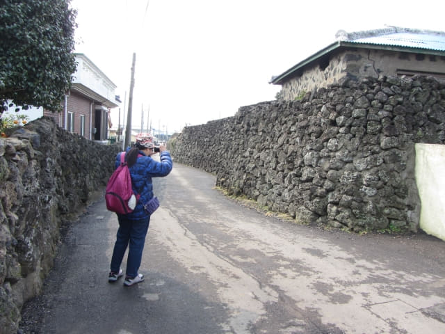
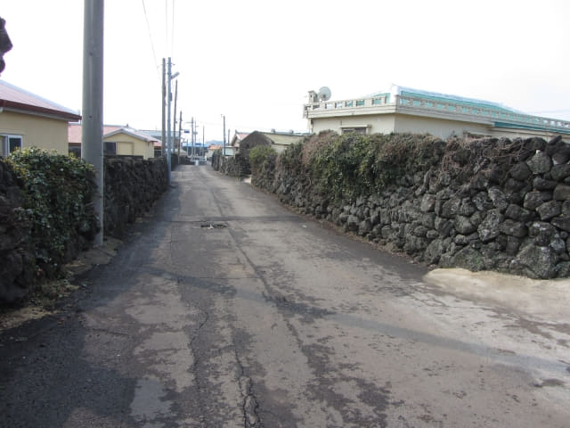
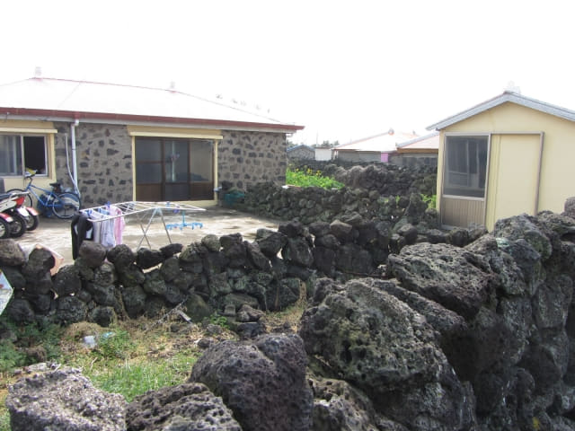
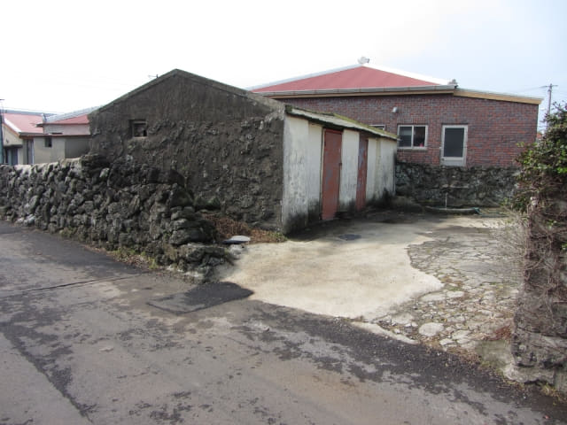
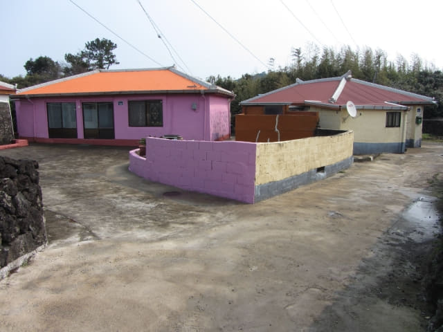
地圖上沒有的 T 字路口
沿吾照里村莊中的小路走了約十五分鐘, 迎面是一個 T 字路口! 沒有路繼續往前走了! 頓時呆了一會, 連忙看看地圖。奇怪? 應該是沿小路一直走的, 那會有這個 T 字路口?
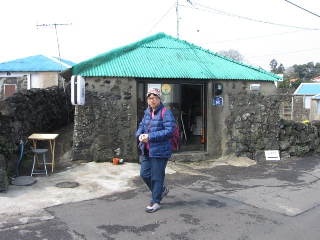